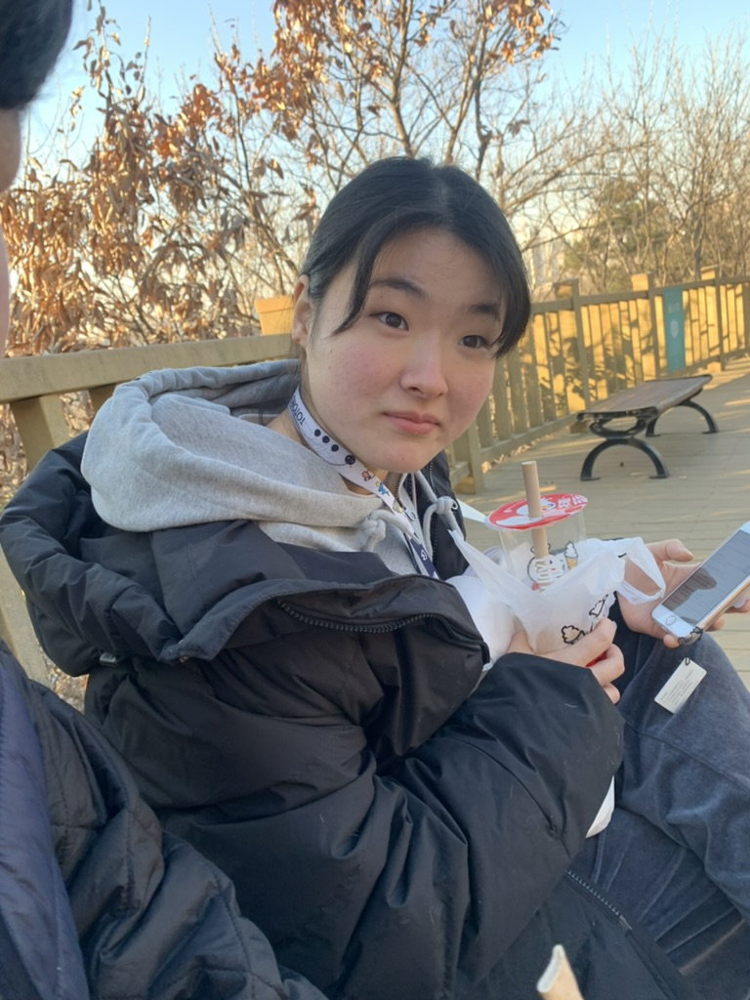
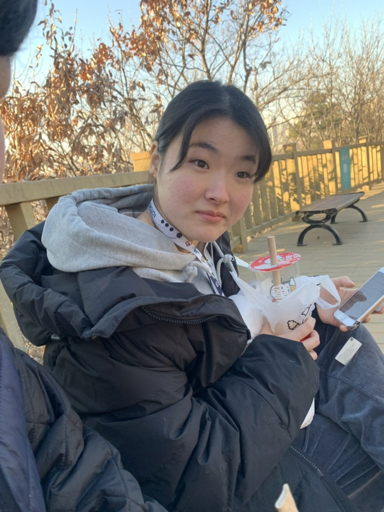
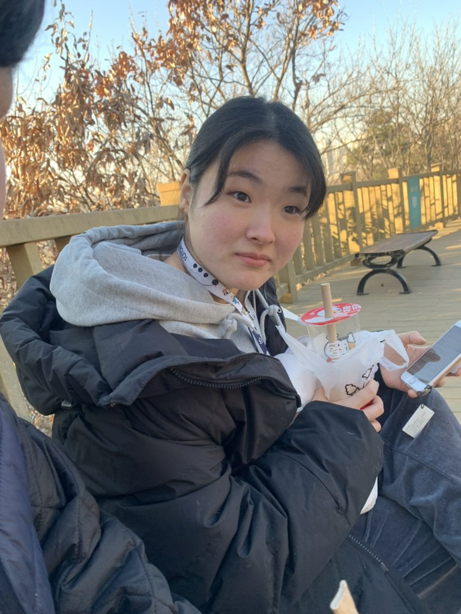

Family Member

만두
이름 만두.
2020년 5월 ??일생.
시고르자브종이다. 눈이 우리가족중 제일 크며 눈과 코 사이즈가 동일하다. 땅콩수술 후에 호르몬 변화로 급격히 살이 쪘으며, 좀만 움직이면 헥헥거린다. 자기 주장이 확실하며 사춘기이다. 하지만 소세지, 간식, 고기, 고구마에 약하며 귀엽다.
만두의 장점/하고싶은 말을 아래에 적어주세요
Please enable JavaScript to view the
comments powered by Disqus.
 
